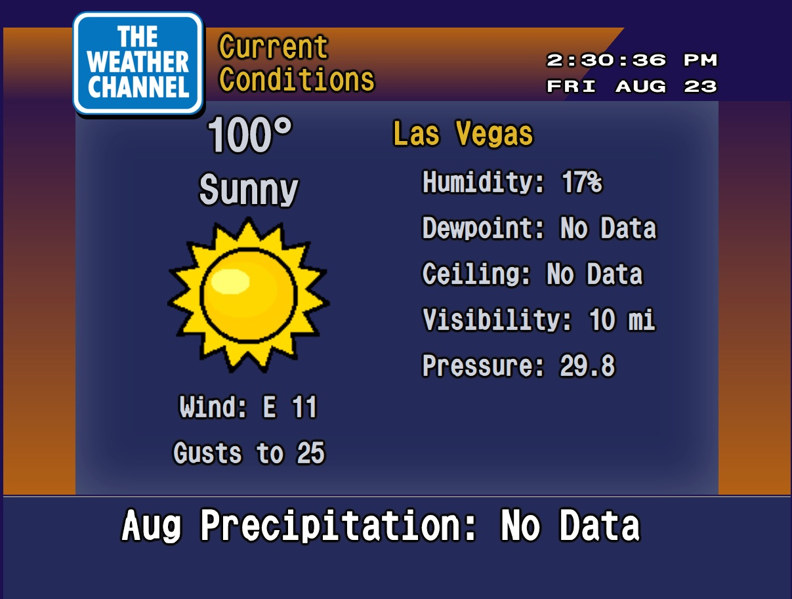

About Me
Since 2007, I've been building websites. Nothing crazy at first, I started out having fun changing my Myspace page like the rest of us messing with the HTML to get the "Matrix" look. I would also start building static web pages for friends and family. It wasn't my main concentration, but I had fun doing it on the side.
Fast forward 10 years, I decided to learn more about the in's and out's of web development and became a Front End Web Developer after graduating The Iron Yard code school in Las Vegas. While working on school projects with teams and on my own, I have a produced a variety of desktop/mobile web applications and sites utilizing the latest HTML5, CSS3, and ES5/ES6/7 Javascript. I am now proficient in back-end development as well utilizing Node.js with Express servers to create endpoints accessing MySQL databases. I've also used React as my main front end framework of choice and learning Angular as we speak.
My goal now is to never stop learning. To code everyday, and have fun building stuff. I'm getting into Wordpress and will begin building sites for clients as well as full-fledged apps. Either way, the community, the environment, is awesome. I love what I do!

Weather Channel Emulator
I have recreated the WeatherStar 4000 that was used by the Weather Channel in the 90's. Using only vanilla Javascript, I wired up this slideshow to generate using the weather data gathered via zip code or your devices current location. I have it live on my Github pages if you want to have a little 90's fun. I also created the music!
My capstone school project from the Iron Yard was a social media site called "Grumble". Built together with my awesome classmate, Mila Endo, with the MySQL, Express, React, and Node stack to create an entertaining social media platform for viewing and posting complaints that can be deleted by user's votes!
Contact Me
Email me! I am always down for coffee or a burrito🌯